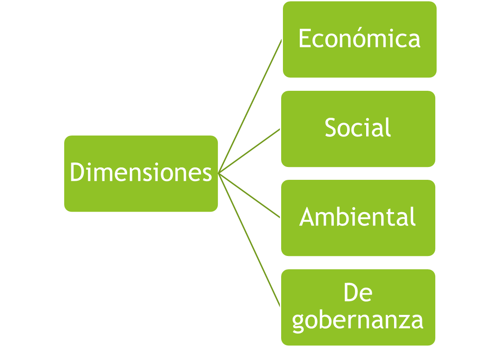
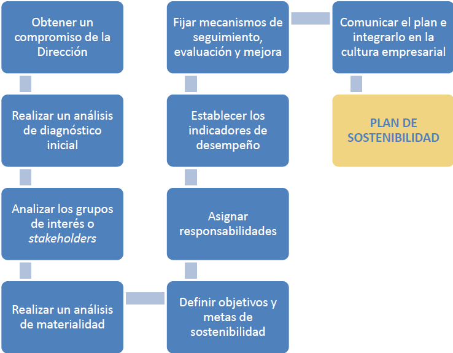
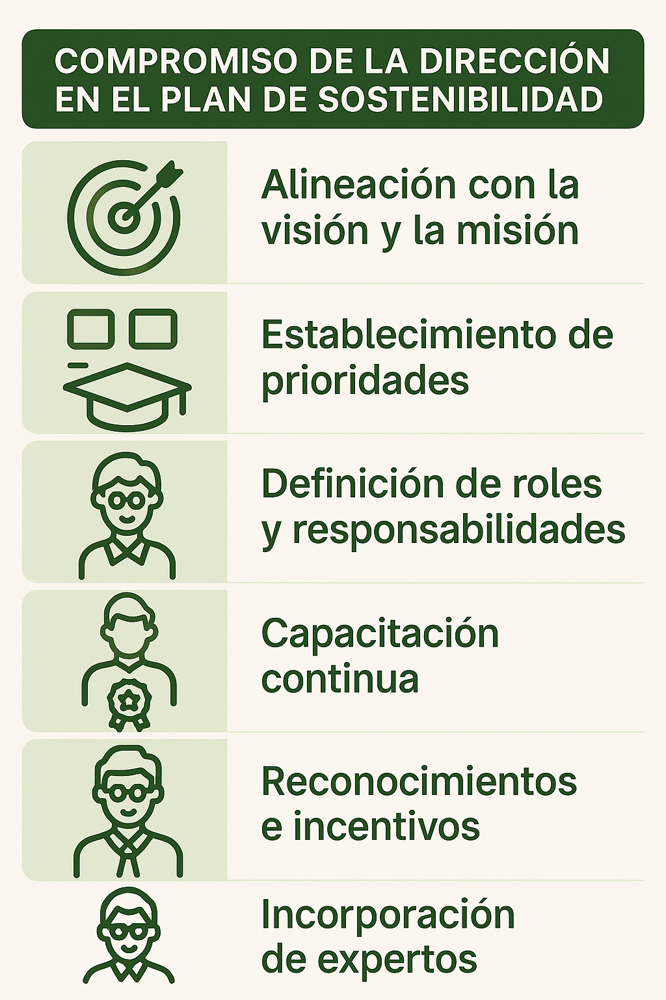

Sesión 3: La estrategia empresarial
Existen una serie de propósitos comunes asociados a las dimensiones de la empresa.

Dimensión económica
- Genera valor económico y opera de manera rentable y beneficiosa.
- La gestión financiera y operativa deber ser eficientes y los ingresos deben obtenerse de manera ética.
Dimensión social
- Debe ser consciente del impactos de sus operaciones en su entorno cercano y el resto de grupos de interés.
- Debe prestar atención a la equidad laboral, la diversidad y la seguridad y bienestar de sus trabajadores.
Dimensión ambiental
- Las acciones que se realizan tienen un impacto y este tiene que minimizarse al máximo.
- La gestión responsable de los recursos naturales, así como la reducción de gases y la gestión de los residuos, deben ser prácticas habituales.
Dimensión de gobernanza
- Deben incluir en el plan de sostenibilidad un catálogo de buenas prácticas y de gobierno.
- Fomentar la transparencia, la ética y la rendición de cuentas, implicando entre otros a los accionistas.
La elaboración del plan de sostenibilidad

Infografía del compromiso de la dirección con el plan de sostenibilidad de la empresa.
